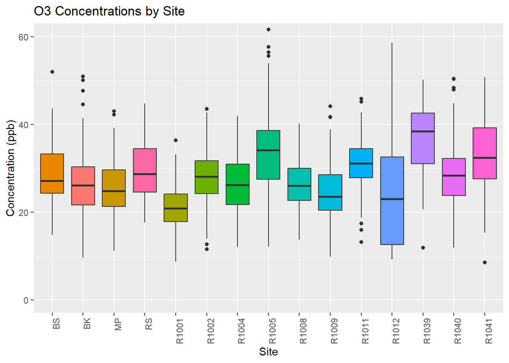
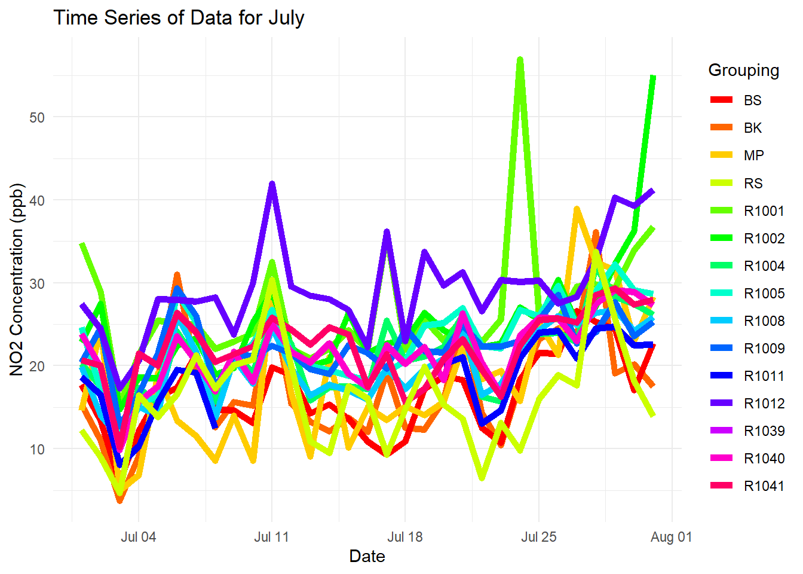

Part 2: Building our SQL Database and Querying it; Example 1
In our first example, we have some pre-cleaned data from a deployment last year in Vancouver, BC. In this deployment, we had 11 multi-pollutant low-cost sensors, and also collected data from 4 regulatory monitoring stations to compare our focus neighborhood to the surrounding region. Let’s load the metadata from this example and show it as a table.
metadata <- read_csv("data/example 1/metadata.csv", show_col_types = FALSE)
knitr::kable(metadata)| Type | Name | ID | latitude | longitude |
|---|---|---|---|---|
| Low-cost sensor | RAMP 1001 | R1001 | 49.2840 | -123.0970 |
| Low-cost sensor | RAMP 1002 | R1002 | 49.2810 | -123.1010 |
| Low-cost sensor | RAMP 1004 | R1004 | 49.2790 | -123.0850 |
| Low-cost sensor | RAMP 1005 | R1005 | 49.2780 | -123.0910 |
| Low-cost sensor | RAMP 1008 | R1008 | 49.2770 | -123.0860 |
| Low-cost sensor | RAMP 1009 | R1009 | 49.2810 | -123.0740 |
| Low-cost sensor | RAMP 1011 | R1011 | 49.2790 | -123.0920 |
| Low-cost sensor | RAMP 1012 | R1012 | 49.2820 | -123.0990 |
| Low-cost sensor | RAMP 1039 | R1039 | 49.2800 | -123.0930 |
| Low-cost sensor | RAMP 1040 | R1040 | 49.2800 | -123.0820 |
| Low-cost sensor | RAMP 1041 | R1041 | 49.2820 | -123.0880 |
| Regulatory Metro Vancouver | Burnaby South | BS | 49.2152 | -122.9857 |
| Regulatory Metro Vancouver | Burnaby Kensington | BK | 49.2792 | -122.9707 |
| Regulatory Metro Vancouver | Richmond South | RS | 49.1414 | -123.1082 |
| Regulatory Metro Vancouver | Mahon Park | MP | 49.3240 | -123.0835 |
For each of these locations, I have provided about 4 months of daily average concentrations of NO2, PM2.5, and O3. I want to first create some SQL tables to store this data, load the data into those tables, and then use the SQL query format to start making some analyses and figures.
Load the data and create the tables
Note I have put in a flag here of 0 or 1 if this is your first time executing the script. If you’re running it for the first time, set initial_run to “1”, otherwise set it to “0” to skip to the next steps. SQL will throw an error if you try and create a new table that already exists.
We also need to set some permissions on the R and MySQL side of things to make sure we can write from these local files. For these permissions in R, this is embedded in the code. For the MySQL side, you will need to edit the “my.ini” configuration file using Notepad or other text editor and add the statement “local_infile=1” under the [client], [mysql], and [mysqld] sections of the file and save it. I’ll show you this now.
initial_run=0
if(initial_run==1){
## This should only be run once.
# Load our data
NO2_daily <- read_csv("data/example 1/NO2_daily.csv", col_types = cols(date = col_date(format = "%m/%d/%Y")), show_col_types = FALSE)
O3_daily <- read_csv("data/example 1/O3_daily.csv", col_types = cols(date = col_date(format = "%m/%d/%Y")), show_col_types = FALSE)
PM_daily <- read_csv("data/example 1/PM_daily.csv", col_types = cols(date = col_date(format = "%m/%d/%Y")), show_col_types = FALSE)
# So that we can permit writing to SQL from R!
dbSendQuery(sql_conn, "SET GLOBAL local_infile = true;")
# create tables in your SQL database
dbCreateTable(sql_conn,name="no2_daily", fields=NO2_daily)
dbCreateTable(sql_conn,name="o3_daily", fields=O3_daily)
dbCreateTable(sql_conn,name="pm_daily", fields=PM_daily)
# write our data to the SQL database
dbWriteTable(sql_conn,"no2_daily",NO2_daily,append=TRUE, row.names=FALSE)
dbWriteTable(sql_conn,"o3_daily",O3_daily,append=TRUE, row.names=FALSE)
dbWriteTable(sql_conn,"pm_daily",PM_daily,append=TRUE, row.names=FALSE)
# RMySQL has some quirks where it really fights pushing the data in a correct datetime format, so we manually send a query to SQL to make sure it's formatted correctly!
dbSendQuery(sql_conn,"ALTER TABLE no2_daily MODIFY date datetime;")
dbSendQuery(sql_conn,"ALTER TABLE o3_daily MODIFY date datetime;")
dbSendQuery(sql_conn,"ALTER TABLE pm_daily MODIFY date datetime;")
}Interacting with the data
Imagine now that you are perhaps a secondary user of the data - maybe this is from a big field campaign and different people will be slicing and dicing the data in different ways. This is where having your data in an SQL database can be super helpful.
You can have a select group of folks maintaining the SQL database (or even better log directly into an SQL server, but that’s a story for another day), and then create a new user who only has permission to SELECT data from the SQL database but not actually modify it.
That keeps your original data safe and sound! Also it’s computationally more efficient to just pull in the data you need.
So let’s look at how we can do this in R. To do this, we’re going to take advantage of the ‘dbplyr’ package, which lets you use typically ‘tidyverse’ style commands to interact with databases. Once you’ve finished your tweaks, the `dbplyr’ package will just make 1 singular call to the database, and it also has the functionality to show you your query so you can learn the SQL equivalent at the same time. Win-win!!
I will show you three different ways of playing with some of this data:
Pulling all the pollutant data into one data.table in R for a specified week at the Mahon Park site and calculating a pseudo-AQI (my time averaging is wrong for true AQI, but thi is a fictional example). There is a little package called con2aqi that converts concentrations to AQI that we will use here.
Box plots across all our sites for each pollutant
A time series of all our sites for NO2.
These are just some simple examples, obviously everyone’s data questions are unique, this is just to provide some inspiration.
# Data processing 1: Let's say we are interested in calculating the AQI for the week of May 15 - 21, 2022 at the Mahon Park site (MP)
no2_db = tbl(sql_conn,"no2_daily") %>% select(date,MP) %>% filter(between(date, as.Date('2022-05-15'), as.Date('2022-05-21'))) %>% show_query() %>% collect() %>% rename(NO2_MP = MP)## <SQL>
## SELECT `date`, `MP`
## FROM `no2_daily`
## WHERE (`date` BETWEEN CAST('2022-05-15' AS DATE) AND CAST('2022-05-21' AS DATE))o3_db = tbl(sql_conn,"o3_daily") %>% select(date,MP) %>% filter(between(date, as.Date('2022-05-15'), as.Date('2022-05-21'))) %>% show_query() %>% collect() %>% rename(O3_MP = MP)## <SQL>
## SELECT `date`, `MP`
## FROM `o3_daily`
## WHERE (`date` BETWEEN CAST('2022-05-15' AS DATE) AND CAST('2022-05-21' AS DATE))pm_db = tbl(sql_conn,"pm_daily") %>% select(date,MP) %>% filter(between(date, as.Date('2022-05-15'), as.Date('2022-05-21'))) %>% show_query() %>% collect() %>% rename(PM_MP = MP)## <SQL>
## SELECT `date`, `MP`
## FROM `pm_daily`
## WHERE (`date` BETWEEN CAST('2022-05-15' AS DATE) AND CAST('2022-05-21' AS DATE))#let's put it together into one dataframe for our local analysis
aqi <- left_join(no2_db, o3_db, by='date') %>% left_join(., pm_db, by='date') %>% rowwise() %>%
mutate(aqi = max(con2aqi("pm25",PM_MP),con2aqi("o3",O3_MP/1000,"8h"),con2aqi("no2",NO2_MP)))
knitr::kable(aqi)| date | NO2_MP | O3_MP | PM_MP | aqi |
|---|---|---|---|---|
| 2022-05-15 00:00:00 | 17.36167 | 23.96840 | 3.784572 | 23 |
| 2022-05-16 00:00:00 | 18.65333 | 39.14375 | 4.175584 | 37 |
| 2022-05-17 00:00:00 | 7.83000 | 35.28208 | 4.057679 | 33 |
| 2022-05-18 00:00:00 | 8.46000 | 36.90521 | 2.723355 | 35 |
| 2022-05-19 00:00:00 | 16.86000 | 31.18792 | 2.832343 | 29 |
| 2022-05-20 00:00:00 | 15.44333 | 27.66354 | 4.070064 | 26 |
| 2022-05-21 00:00:00 | 23.57333 | 27.47411 | 5.322663 | 26 |
##################
# Data processing 2: Make box plots of the NO2, O3 and PM2.5 daily average concentrations across all the sites.
no2_tidy = tbl(sql_conn,"no2_daily") %>% select(-date) %>% collect() %>% pivot_longer(everything(),names_to = "site", values_to = "concentration")
# Create a custom order for the 'site' variable
site_order <- c("BS", "BK", "MP","RS","R1001","R1002","R1004","R1005","R1008","R1009","R1011","R1012","R1039","R1040","R1041")
# Generate the boxplot in ggplot2
no2_plot <- ggplot(no2_tidy, aes(x = factor(site, levels = site_order), y = concentration, fill=site)) +
geom_boxplot() +
labs(title = "NO2 Concentrations by Site",
x = "Site",
y = "Concentration (ppb)") +
theme(axis.text.x = element_text(angle = 90, hjust = 1), legend.position="none") +
scale_fill_discrete() +
coord_cartesian(ylim = c(0,60))
no2_plot
# Repeat for O3
o3_tidy = tbl(sql_conn,"o3_daily") %>% select(-date) %>% collect() %>% pivot_longer(everything(),names_to = "site", values_to = "concentration")
o3_plot <- ggplot(o3_tidy, aes(x = factor(site, levels = site_order), y = concentration, fill=site)) +
geom_boxplot() +
labs(title = "O3 Concentrations by Site",
x = "Site",
y = "Concentration (ppb)") +
theme(axis.text.x = element_text(angle = 90, hjust = 1), legend.position="none") +
scale_fill_discrete() +
coord_cartesian(ylim = c(0,60))
o3_plot
# Repeat for PM2.5
pm_tidy = tbl(sql_conn,"pm_daily") %>% select(-date) %>% show_query() %>% collect() %>% pivot_longer(everything(),names_to = "site", values_to = "concentration")## <SQL>
## SELECT
## `R1001`,
## `R1002`,
## `R1004`,
## `R1005`,
## `R1008`,
## `R1009`,
## `R1011`,
## `R1012`,
## `R1039`,
## `R1040`,
## `R1041`,
## `BS`,
## `BK`,
## `RS`,
## `MP`
## FROM `pm_daily`pm_plot <- ggplot(pm_tidy, aes(x = factor(site, levels = site_order), y = concentration, fill=site)) +
geom_boxplot() +
labs(title = "PM2.5 Concentrations by Site",
x = "Site",
y = "Concentration (ug/m3)") +
theme(axis.text.x = element_text(angle = 90, hjust = 1), legend.position="none") +
scale_fill_discrete() +
coord_cartesian(ylim = c(0,20))
pm_plot
# Date Processing 3: Now let's make a time series for the month of July 2022 for NO2 at all of our sites.
no2_july = tbl(sql_conn,"no2_daily") %>% filter(month(date)==7) %>% show_query() %>% collect() %>% pivot_longer(cols=c(2:16),names_to = "site", values_to = "concentration")## <SQL>
## SELECT *
## FROM `no2_daily`
## WHERE (EXTRACT(month FROM `date`) = 7.0)no2_july$Grouping <- as.factor(no2_july$site)
ggplot(no2_july, aes(x=ymd_hms(date), y=concentration, color=Grouping)) +
geom_line(size=2, na.rm=TRUE) +
labs(title = "Time Series of Data for July",
x = "Date",
y = "NO2 Concentration (ppb)") +
scale_color_manual(values = rainbow(15), breaks = site_order) +
theme_minimal()